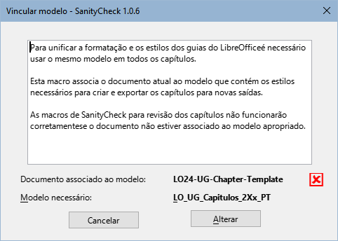
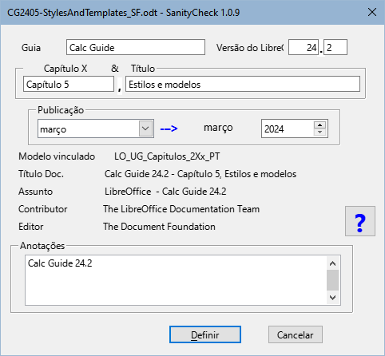
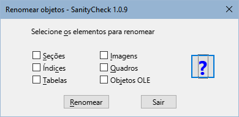
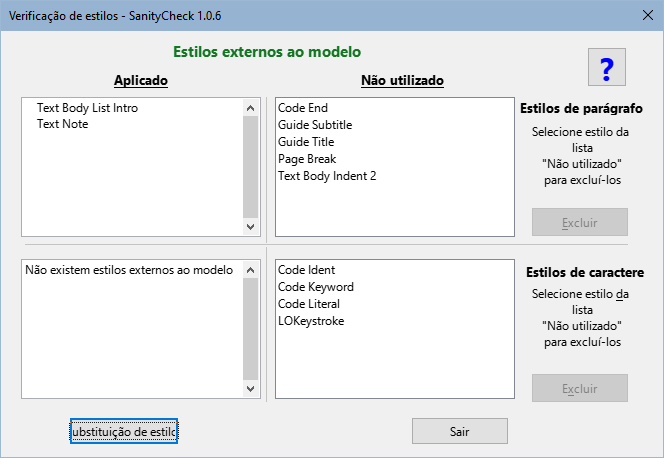
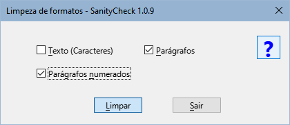
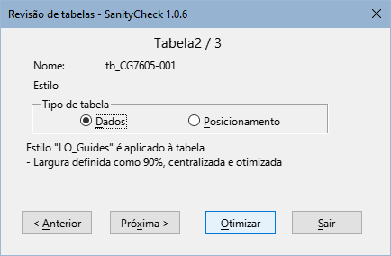
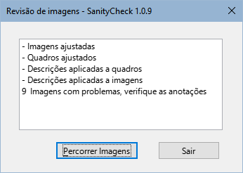
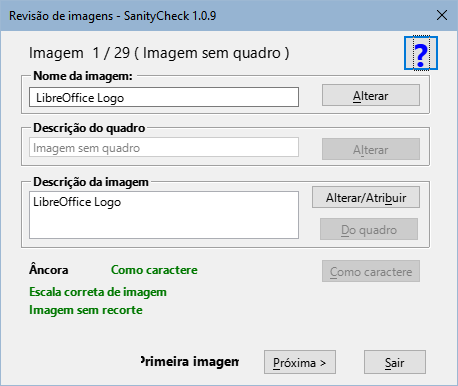
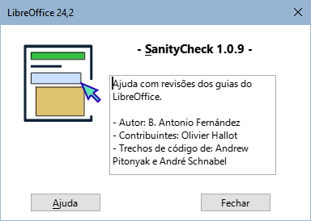

Macros para unificar o formato e estilos dos guias do LibreOffice v.2X.z
Direitos autorais
Este documento é protegido por direitos autorais ©2024 pela equipe de documentação do LibreOffice. Os contribuidores estão listados abaixo. Pode ser distribuído e modificado nos termos do GNU General Public License versão 3 ou posterior ou do Creative Commons Attribution License versão 4.0 ou posterior.
Todas as marcas registradas mencionadas neste guia pertencem aos seus legítimos proprietários.
|
Autor |
Colaboradores |
|
B. Antonio Fernández |
Olivier Hallot |
Fontes
As macros que compõem a extensão aqui descrita são o resultado da consulta de diferentes fontes que nomeio em termos gerais, uma vez que me é impossível entrar em detalhes. Estes são:
-
A documentação da LibreOffice Basic e dos diferentes derivados do StarOffice.
-
Os livros: Aprendiendo OooBasic por Mauricio Baeza, OpenOffice.org Macros Explained por Andrew Pitonyak e Programmation OpenOffice.org por Bernard Marcelly.
Bem como diversas consultas aos fóruns OpenOffice e LibreOffice e o estudo de outras macros nas extensões para LibreOffice.
Introdução
SanityCheck é uma biblioteca de macros para o Writer que visa ajudar a unificar a formatação e os estilos dos capítulos e guias do LibreOffice.
Embora algumas tarefas possam ser executadas com ferramentas próprias do Writer, as macros tentam centralizar opções específicas do formato do capítulo e automatizar alguns processos que podem ser tediosos e demorados.
Como regra de segurança, trabalhe em uma cópia do arquivo que irá revisar e faça cópias progressivas do seu trabalho.
Utilize macros preferencialmente em capítulos, antes de montar o guia, pois será mais fácil corrigir erros de formatação e reduzirá o tempo de execução das macros.
Instalação e recursos
As macros são empacotadas como uma extensão e instaladas como qualquer outra extensão, a partir do gerenciador de extensões. Se você encontrar problemas para atualizar ou instalar uma nova versão, desinstale a versão antiga e instale a nova versão.
-
As macros são escritas em LO Basic portanto devem ser compatíveis com qualquer sistema operacional sem a necessidade de instalação de dependências.
-
A extensão adiciona uma barra de ferramentas (Figura 1), e um menu chamado LO SanityCheck. Las ferramentas também estan integradas à interface do usuário Em abas.
Figura 1: Caixa de diálogo SanityCheck

-
As macros estão disponíveis em espanhol, inglês e português, com possibilidade de agregar outros idiomas adicionando traduções ao módulo L10n.
-
A extensão incorpora modelos com estilos próprios dos guias (também nos três idiomas para permitir a correção ortográfica):
- Modelo de capítulo (para capítulos individuais).
- Modelo de Documento Mestre (para criar um documento mestre e montar o guia completo ou para vinculá-lo a um guia completo em formato odt).
- Modelo de contracapa (para anexar no final do guia completo).
-
Cada caixa de diálogo contém uma página de ajuda integrada que fornece informações sobre a função da ferramenta e, após a execução das macros, um resumo do log de alterações é exibido.
Macros incluídas
-
Disponibilidade de macros
As macros são projetadas para o formato específico de guias e especificamente para uso com capítulos de guias.
Embora algumas macros possam ser usadas em um documento mestre ou em um guia inteiro, você verá que várias macros são desabilitadas por motivos de segurança
Elas também são muito limitadas para outros documentos que não sejam guias.
Alternar destaque
Macro disponível para todos os tipos de documentos.
A macro realça ou desmarca os estilos de guia aplicados no documento para distinguir facilmente os estilos e verificar sua aplicação correta. É especialmente útil para verificar se as listas possuem formatação direta aplicada.
Associar modelo
Macro disponível para todos os tipos de documentos.
Associa o documento ao modelo fornecido que contém os estilos próprios da documentação.
-
Esta é a forma recomendada de transferir novos estilos para documentos antigos.
-
Se o documento não contiver os estilos necessários, algumas macros não funcionarão.
Figura 2: Caixa de diálogo Associar modelo

-
Notas
— O modelo de documento mestre pode ser associado a guias completos nos formatos ODM (documento mestre) e ODT. Este modelo contém os mesmos estilos que o modelo de capítulo, mas difere nos níveis de título apresentados no índice.
— Em outros documentos, apenas o modelo de capítulo pode ser aplicado.
Campos do documento
Esta macro está disponível apenas para capítulos ou guias completos.
Figura 3: Caixa de diálogo Campos do documento

-
Nota
— Os campos Capítulo X e Título são desabilitados em guias completos.
— Os campos Contribuidor e Editor, introduzidos a partir da versão 24, são preenchidos automaticamente
Renomear objetos
Esta macro está disponível apenas para capítulos de guia.
Figura 4: Caixa de diálogo Renomear objetos

Verificar estilos
Macro disponível para todos os tipos de documentos.
-
A macro verifica se os estilos usados nos capítulos seguem os padrões dos modelos para evitar estilos externos aos guias (geralmente estilos de modelos anteriores).
-
A macro percorre o documento e marca os parágrafos com estilo externos na documentação com um comentário e destaca estilos de caracteres externos com fundo preto e fonte amarela.
-
A macro substitui estilos de parágrafo anteriores aos guias da versão 24 por suas contrapartes atualizadas, alguns com nomes incorretos (transição para o novo modelo) e o estilo de caractere MenuPath por Ênfase forte (remanescentes de versões mais antigas).
-
A macro permite eliminar estilos externos quando eles não são aplicados ao documento.
Figura 5: Caixa de diálogo Verificação de estilos

-
Nota
Macros não podem fazer tudo. O trabalho do revisor é substituir os estilos extranos ao modelo pelos corretos e eliminá-los do documento
Limpeza de formato direto
Esta macro está disponível apenas para capítulos de guia.
Figura 6: Caixa de diálogo Limpeza de formatos

-
Texto: limpa a formatação direta aplicada a fragmentos ou strings de texto. Ao executá-lo, a numeração das listas ordenadas se torna consecutiva em todo o documento, por isso é aconselhável marcar também a limpeza dos parágrafos numerados.
-
Parágrafos: Elimina a formatação direta, incluindo marcadores ou numeração, aplicada a parágrafos normais e também limpa a formatação direta de listas não ordenadas.
-
Parágrafos Numerados: Neste caso, a macro remove a formatação direta aplicada às listas ordenadas e reinicia a numeração sempre que possível, adicionando um comentário aos parágrafos onde a numeração pode precisar ser reiniciada.
-
Nota:
Para que a macro redefina corretamente a numeração, cada lista deve ser precedida pelo estilo de parágrafo Body Text, List Intro. Em muitos casos, o estilo antes das listas é Corpo de texto. A macro altera o estilo dos parágrafos anteriores as listas para o estilo Body Text, List intro após uma mensagem de confirmação.
Ajuste de tabelas
Macro disponível para todos os tipos de documentos
Figura 7: Caixa de diálogo Revisão de Tabelas

Ajuste de figuras
Esta macro está disponível apenas para capítulos de guia.
Figura 8: Caixa de diálogo Log de Ajuste de figuras

Esta macro não possui diálogo inicial, ela roda com as configurações ideais para os quadros e imagens. Na caixa de diálogo de registro (Figura 8), você pode acessar a macro Percorrer imagens.
-
La macro aplica a âncora e a formatação apropriadas às imagens, aos quadros que as contêm e às legendas.
-
Obtém o texto da legenda para aplicar-lo à la descrição ao quadro e a imagem.
-
Insira comentários em:
- Imagens cuja proporção no é proporcional.
- Imagens que foram recortadas com Writer.
- Legendas mal formadas (possíveis erros na modificação de uma legenda já inserida).
Percorrer imagens
Macro disponível para todos os tipos de documentos
Figura 9: Caixa de diálogo Percorrer imagens

Info
Figura 10: Caixa de diálogo Info

Limitações, problemas conhecidos e dicas
Modelos
As macros para verificação de estilos e limpeza de formatação direta baseiam-se diretamente nos estilos dos modelos fornecidos.
Para que as macros funcionem corretamente, os capítulos devem ter o modelo apropriado.
São fornecidos modelos para os idiomas português, espanhol e inglês, mas serão visualizados apenas os modelos correspondentes ao idioma da interface.
As Macros determinam o tipo de documento com base no nome do arquivo e selecionam o modelo apropriado para aplicar a capítulos ou guias completos (em formatos odm e odt). Em outros documentos, apenas o modelo de capítulo pode ser vinculado.
Estilos
Problemas com nomes de estilos:
Solução:
Problema com estilos de caracteres:
Solução:
Problemas com estilos de lista:
Solução
Limpeza do formato direto de parágrafos
A macro não consegue distinguir que tipo de formatação direta foi aplicada a um parágrafo, portanto elimina toda formatação direta: recuo, numeração, espaçamento, etc.
Conselhos:
Limpeza do formato direto de números (listas ordenadas)
A sequência de numeração nas listas ordenadas poderá ser interrompida por imagens, avisos, notas ou sugestões.
Ao limpar o formato, a sequência de numeração é perdida e a numeração torna-se contínua. As macros tentam reiniciar a numeração, mas não é fácil distinguir onde reiniciar-las. Embora a macro avise sobre pontos onde pode ser reiniciada, a macro não é infalível.
Conselho:
Tabelas
Os estilos de tabela personalizados não se aplicam ou funcionam como estilos de parágrafo ou caractere, portanto, mesmo se você aplicar o estilo LO User Guides, provavelmente precisará ajustar a tabela para divisão de página, se necessário, e aplicar uma formatação mais apropriada usando a caixa de diálogo Propriedades da tabela do Writer.
Quadros
Quando as figuras são ajustadas, os quadros se adaptam automaticamente à maior largura do texto ou imagem. Em alguns casos, os quadros ocupam toda a largura do texto da página.
Problema:
Solução:
-
Crie um novo documento usando o modelo fornecido.
-
Selecione todo o texto do documento afetado e copie-o sobre o novo documento.
-
Trabalhe no novo documento.
Imagens
Em alguns casos, a macro insere um comentário nas imagens que não é compreensível.
Problema:
Solução:
Legendas das figuras
Em alguns casos, a macro insere um comentário de legenda mal formado que não é compreensível.
Problema:
Solução:
Problema:
Solução:
-
Reconstrua a figura copiando apenas a imagem e colando-a em outro parágrafo (certifique-se de copiar apenas a imagem)
-
Insere uma nova legenda.
Sobre a tradução
Se você leu até aqui, terá visto muitos erros de vocabulário e gramaticais.
Este documento foi traduzido do espanhol com o Google (algumas correções feitas por mim).
Lamento que meu português seja tão ruim, mas espero que este documento seja compreensível.